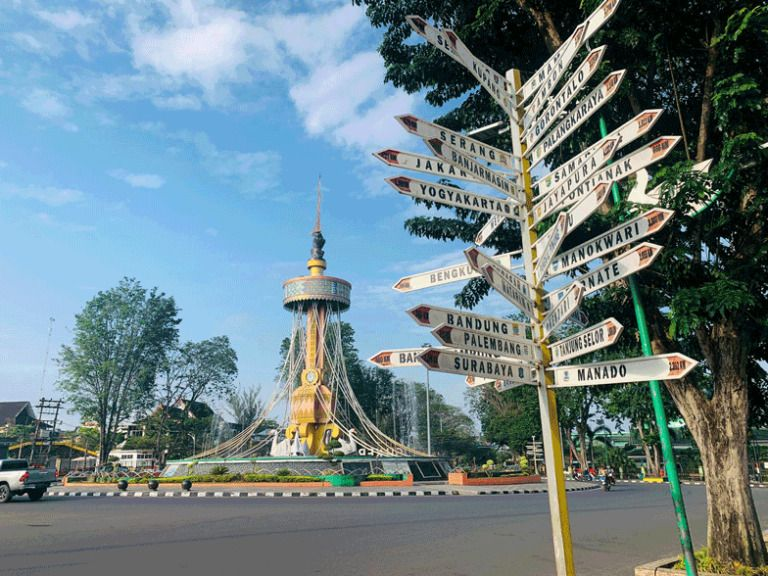
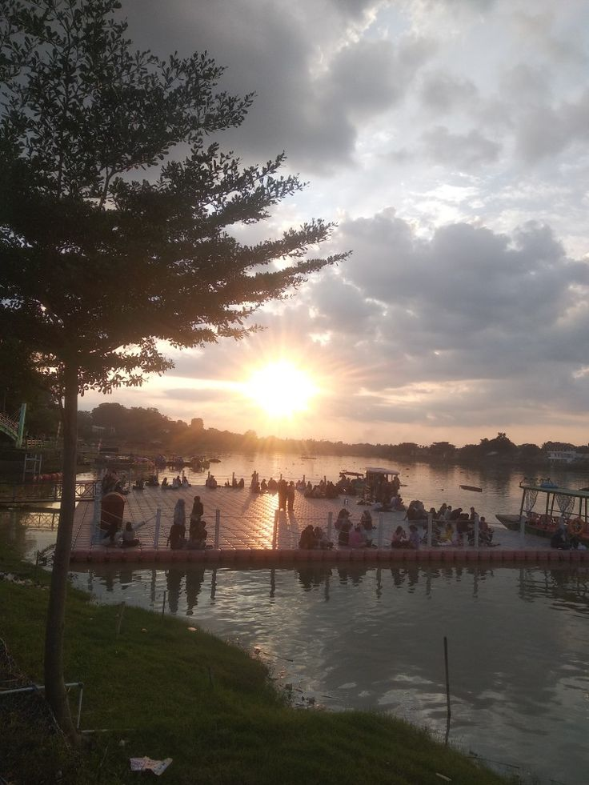
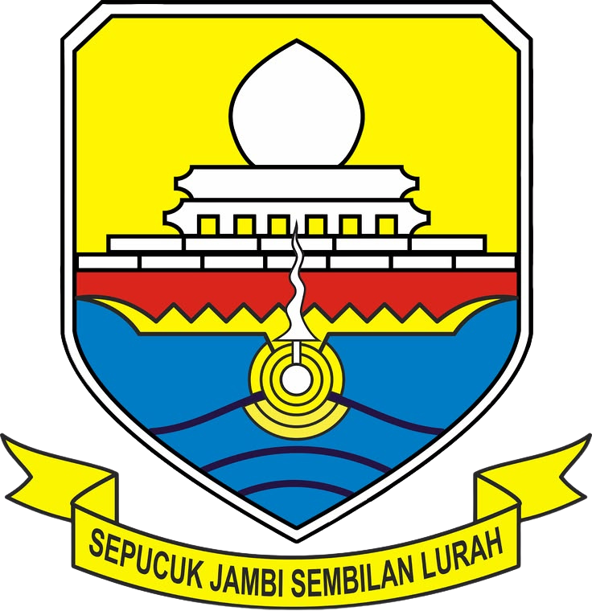

Jejak visual Jambi
Galeri Foto
Suasana alam, jejak sejarah, dan rasa kuliner dalam satu koleksi visual.
Jelajahi koleksiIngin mengunjungi lokasi di foto? Lihat data wisata atau hubungi kami.



Jejak visual Jambi
Suasana alam, jejak sejarah, dan rasa kuliner dalam satu koleksi visual.
Jelajahi koleksiIngin mengunjungi lokasi di foto? Lihat data wisata atau hubungi kami.